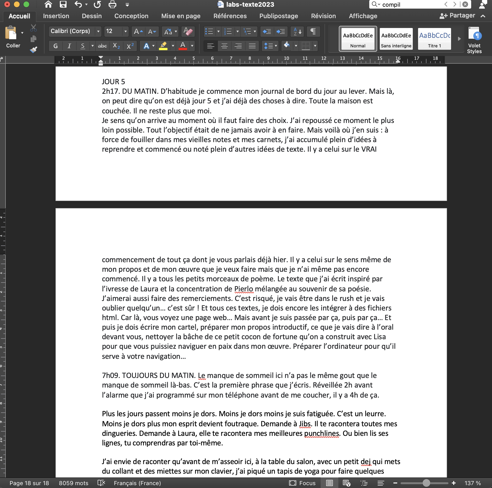
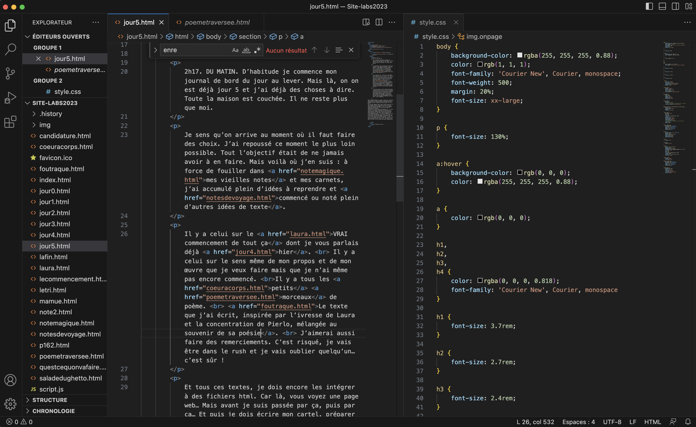

2h17. DU MATIN. D’habitude je commence mon journal de bord du jour au lever. Mais là, on est déjà jour 5, et j’ai déjà des choses à dire. Toute la maison est couchée. Il ne reste plus que moi.
Je sens qu’on arrive au moment où il faut faire des choix. Je l’ai repoussé le plus possible. Tout l’objectif était de ne jamais avoir à en faire. Mais voilà où j’en suis : à force de fouiller dans mes vieilles notes et mes carnets, j’ai accumulé plein d’idées à reprendre et commencé ou noté plein d’autres idées de texte.
Il y a celui sur le VRAI commencement de tout ça, dont je vous parlais déjà hier.
Il y a celui sur le sens même de mon propos et de mon œuvre que je veux faire, mais que je n’ai même pas encore commencé.
Il y a tous les petits morceaux de poèmes.
Il y a le texte écrit hier soir, inspirée par l’ivresse de Laura et la concentration de Pierlo, mélangée au souvenir de sa poésie.
J'aimerais reprendre certains textes de mon appel à candidature.
J'aimerais reprendre le texte que j'ai écrit quand Lisa m'a annoncé que je ferais partie des artistes cette année.
J’aimerais aussi faire des remerciements. C’est risqué, je vais être dans le rush et je vais oublier quelqu’un… c’est sûr !
Et tous ces textes, je dois encore les intégrer à des fichiers html. Car là, vous voyez une page web… Mais avant je suis passée
par ça,
puis par ça.
Et puis je dois écrire mon cartel, préparer mon propos introductif, ce que je vais dire à l’oral devant vous, nettoyer la bâche de ce petit cocon de fortune qu’on a construit avec LisaEnorme merci et big up to you Lisa. Coeur avec les doigts pour que vous puissiez naviguer en paix dans mon œuvre. Préparer l’ordinateur pour qu’il serve à votre navigation…
7h09. TOUJOURS DU MATIN. Le manque de sommeil ici n’a pas le même goût que le manque de sommeil là-bas. C’est la première phrase que j’écris. Réveillée 2h avant l’alarme que j’ai programmé sur mon téléphone avant de me coucher, il y a 4h de ça.
Plus les jours passent moins je dors. Moins je dors moins je suis fatiguée. C’est un leurre. Moins je dors plus mon esprit devient foutraque. Demande à Jibs. Il te racontera toutes mes dingueries. Demande à Laura, elle te racontera mes meilleures punchlines. Ou bien lis ses lignes, tu comprendras par toi-même.
J’ai envie de raconter qu’avant de m’asseoir ici, à la table du salon, avec un petit-dej qui met du collant et des miettes sur mon clavier, j’ai piqué un tapis de yoga pour faire quelques étirements dans le jardin, de tout ce qui traversait alors déjà mon esprit, de mon analyse de qui était probablement debout, à la vue du lit d’Agathe vide, et du thé encore tiède au fond de la théière. Il y a une présence dans cette absence. C’est réconfortant. Mais STOP.
Il faut faire des choix aujourd’hui. Je l’ai dit cette nuit, je le répète ce matin.
Je rêve de continuer à ne faire qu’écrire en partant dans tous les sens. Mais je vais plutôt écrire en partant de tout ce qui a déjà été esquissé. Puis mettre en forme, relire. Intégrer mes photos. Let’ssssss go !